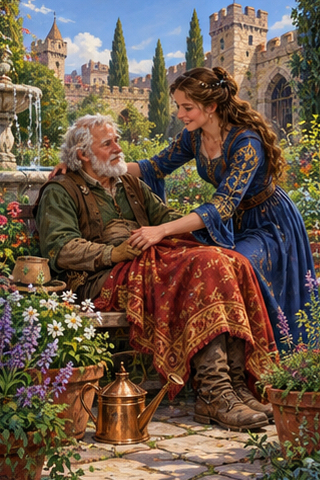
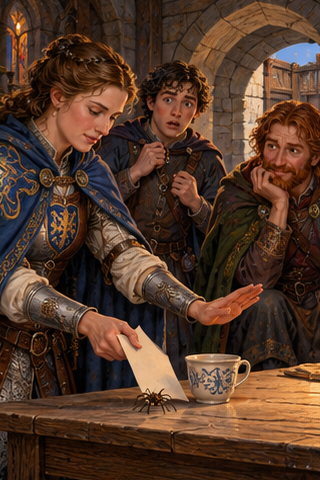
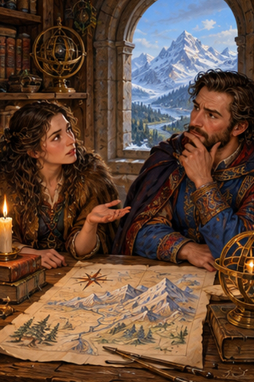
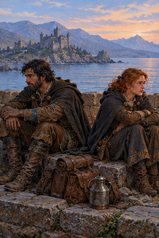
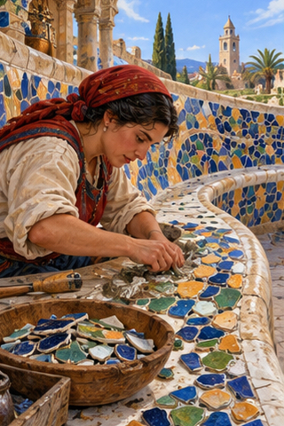
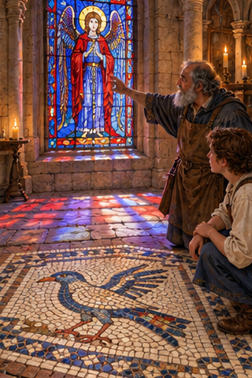
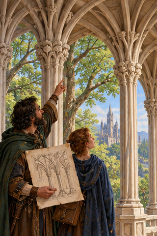
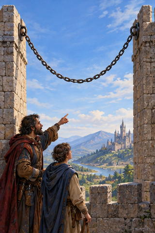
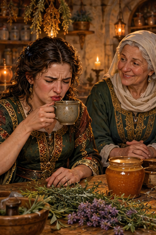

PDD Batch 29 — review only
Ten 320×480 portraits, in manifest order. Not installed.
Original composite
1. PDD 307 — El cuidado como forma de amor
pdd307.jpg
2. PDD 308 — Una cosa que respeto son las fobias ajenas
pdd308.jpg
3. PDD 309 — ¿Por qué estás tan seguro de eso?
pdd309.jpg
4. PDD 310 — Nuestra relación solo funcionaba en la huida
pdd310.jpg5. PDD 311 — originalidad
pdd311.jpg
6. PDD 312 — el trencadis
pdd312.jpg
7. PDD 313 — la vidriera, 🟡 el mosaico
pdd313.jpg
8. PDD 314 — organicismo
pdd314.jpg
9. PDD 315 — Catenaria
pdd315.jpg
10. PDD 316 — Amargo
pdd316.jpg